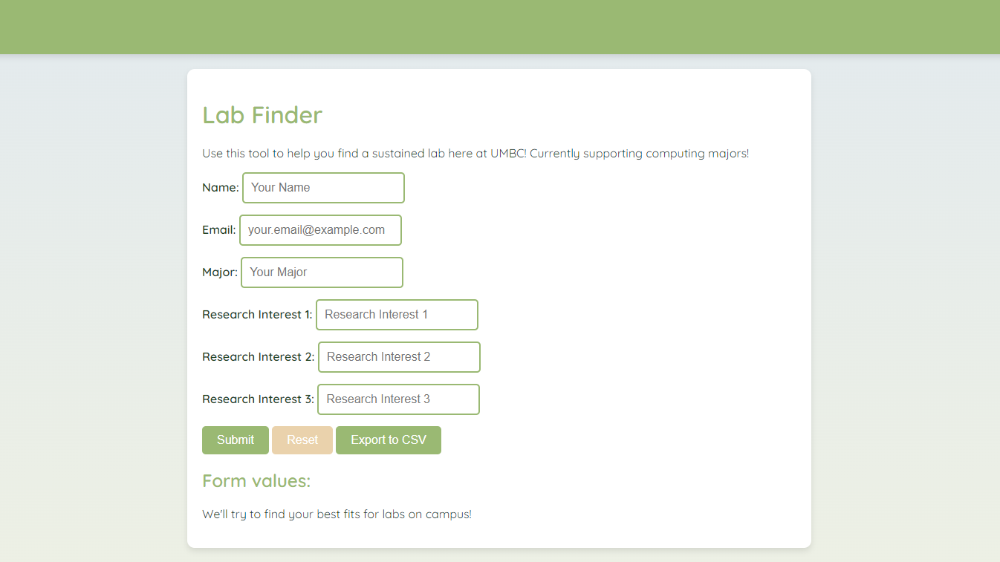

Data Aggregation
UMBC Lab Finder
Helping students discover research labs and opportunities that align with their interests.

Project overview
Finding a research lab can require looking through many faculty and department pages, especially when a student's interests span several fields. UMBC Lab Finder focuses on making that discovery process easier by bringing research information into a tool for students exploring potential labs.
Approach
The project applies data aggregation to the problem of matching students with research opportunities. Collecting and organizing lab information makes it possible to explore it through a shared interface instead of treating every lab website as a separate starting point.
Why it matters
A student may know the topics they want to study without knowing which researchers work on them. Lab Finder connects those interests with information about research groups, giving students a starting point for learning about a lab and deciding whom to contact.